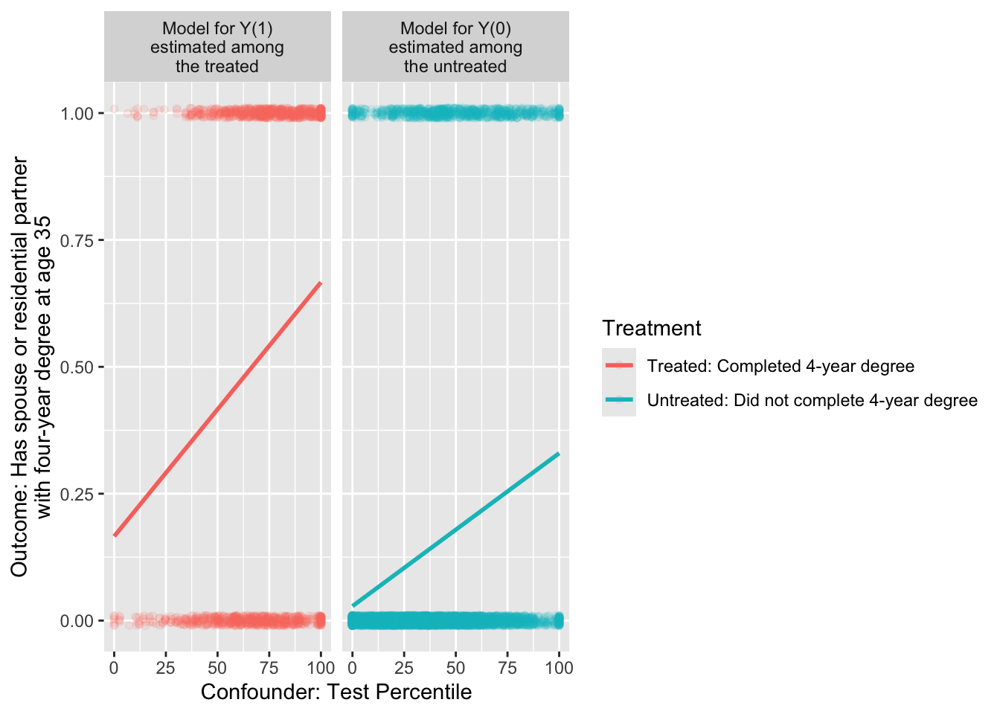
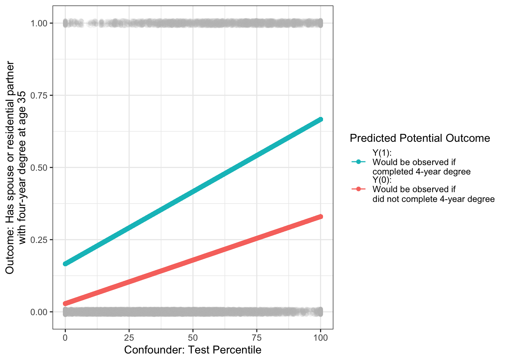
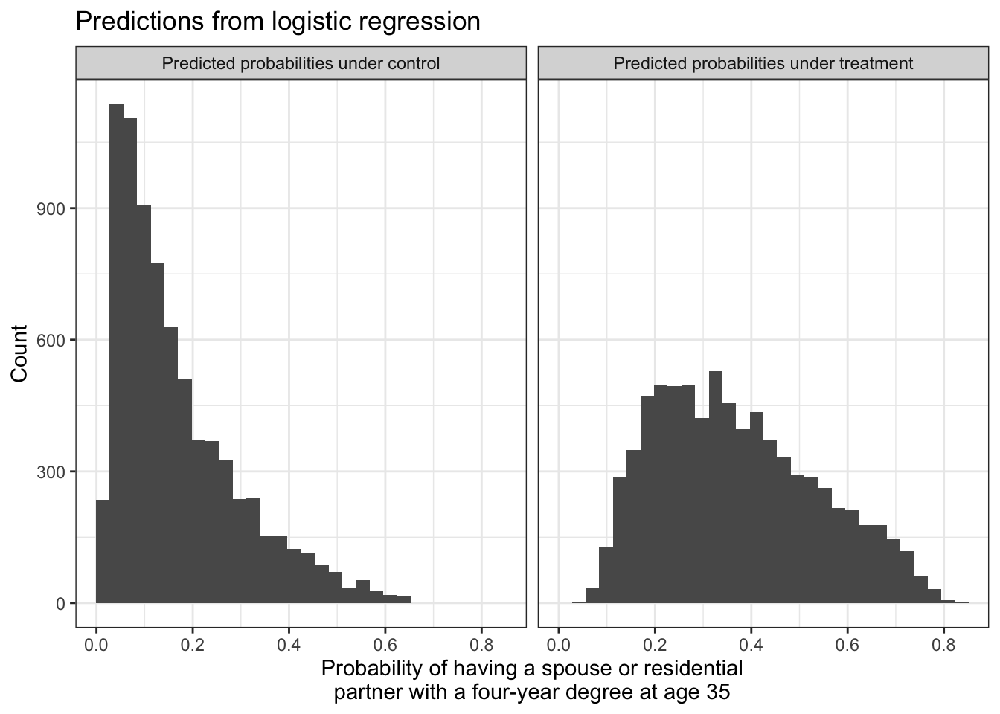
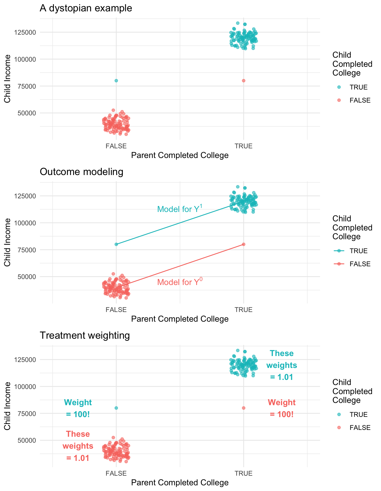

library(tidyverse)Models for Causal Inference
Topic for 2/23.
Here are slides on outcome modeling and treatment modeling.
Models are useful when we need subgroup summaries but we do not observe very many units in each subgroup. This situation is common in causal inference: we assume that \(\vec{X}\) is a sufficient adjustment set so that conditional exchangeability holds, and this allows us to identify the causal quantity \(\text{E}(Y^a\mid \vec{X} = \vec{x})\) by the statistical quantity \(\text{E}(Y\mid A = a, \vec{X} = \vec{x})\). But that empirical quantity—the subgroup mean among those with treatment value \(a\) and adjustment set value \(\vec{x}\)—may be the mean of a subgroup that is unpopulated. This is especially true in practice because the adjustment set \(\vec{X}\) is often most plausible when it includes many variables, leading to a curse of dimensionality and small subgroup sample sizes. For this reason, causal inference approaches that adjust for measured variables often require us to estimate the means in many subgroups that are sparsely populated.
This page introduces outcome models for causal inference. To run the code on this page, you will need the tidyverse.
Motivating example
To what extent does completing a four-year college degree by age 25 increase the probability of having a spouse or residential partner with a four-year college degree at age 35, among the population of U.S. residents who were ages 12–16 at the end of 1996?
We used this example on the Why Model? page and will continue with it here. For those jumping in on this page, here is a refresher.
This causal question draws on questions in sociology and demography about assortative mating: the tendency of people with high education, income, or status to form households together1. One reason to care about assortative mating is that it can contribute to inequality across households: if people with high earnings potential form households together, then income inequality across households will be greater than it would be if people formed households randomly.
Our question is causal: to what extent is the probability of marrying a four-year college graduate higher if one were hypothetically to finish a four-year degree, versus if that same person were hypothetically to not finish a college degree? But in data that exist in the world, we see only one of these two potential outcomes. The people for whom we see the outcome under a college degree are systematically different from those for whom we see the outcome under no degree: college graduates come from families with higher incomes, higher wealth, and higher parental education, for example. All of these factors may directly shape the probability of marrying a college graduate even in the absence of college. Thus, it will be important to adjust for a set of measured confounders, represented by \(\vec{X}\) in our DAG.

By adjusting for the variables \(\vec{X}\), we block all non-causal paths between the treatment \(A\) and the outcome \(Y\) in the DAG. If this DAG is correct, then conditional exchangeability holds with this adjustment set: \(\{Y^1,Y^0\}\unicode{x2AEB} A \mid\vec{X}\).
To estimate, we use data from the National Longitudinal Survey of Youth 1997, a probability sample of U.S. resident children who were ages 12–16 on Dec 31, 1996. The study followed these children and interviewed them every year through 2011 and then every other year after that.
We will analyze a simulated version of these data (nlsy97_simulated.csv), which you can access with this line of code.
all_cases <- read_csv("https://soc114.github.io/data/nlsy97_simulated.csv")
Expand to learn how to get the actual data
To access the actual data, you would need to register for an account, log in, upload the nlsy97.NLSY97 tagset that identifies our variables, and then download. Unzip the folder and put the contents in a directory on your computer. Then run our code file prepare_nlsy97.R in that folder. This will produce a new file d.RDS, contains the data. You could analyze that file. In the interest of transparency, we wrote the code nlsy97_simulated.R to convert these real data to simulated data that we can share.
The data contain several variables
idis an individual identifier for each personais the treatment, containing the respondent’s education codedtreatedif the respondent completed a four-year college degree anduntreatedif not.yis the outcome:TRUEif has a spouse or residential partner at age 35 who holds a college degree, andFALSEif no spouse or partner or if the spouse or partner at age 35 does not have a degree.- There are several pre-treatment variables
sexis codedFemaleandMaleraceis race/ethnicity and is codedHispanic,Non-Hispanic Black, andNon-Hispanic Non-Black.mom_educis the respondent’s mother’s education as reported in 1997. It takes the valueNo momif the child had no residential mother in 1997, and otherwise is coded with her education:< HS,High school,Some college, orCollege.dad_educis the respondent’s father’s education as reported in 1997. It takes the valueNo dadif the child had no residential father in 1997, and otherwise is coded with his education:< HS,High school,Some college, orCollege.log_parent_incomeis the log of gross household income in 1997log_parent_wealthis the log of household net worth in 1997test_percentileis the respondent’s percentile score on a test of math and verbal skills administered in 1999 (the Armed Services Vocational Aptitude Battery).
When values are missing, we have replcaed them with predicted values. In the simulated data, no row represents a real person because values have been drawn randomly from a probability distribution designed to mimic what exists in the real data. As discussed above, we did this in order to share the file with you by a download on this website.
Outcome modeling
Because the causal effect of A on Y is identified by adjusting for the confounders, we can estimate by outcome modeling. There are three general steps.
- Model \(E(Y\mid A, \vec{X})\), the conditional mean of \(Y\) given the treatment and confounders
- Predict potential outcomes
- Predict \(Y^1\) for every unit
- Predict \(Y^0\) for every unit
- Aggregate to the average causal effect
With one confounder
We first illustrate the steps as though there were only one confounding variable: test percentile. The first step is to create a data object containing only the treated observations and a data object containing only the untreated observations.
untreated_cases <- all_cases |> filter(a == "untreated")
treated_cases <- all_cases |> filter(a == "treated")We use the untreated cases to estimate a model for \(Y^0\) as a function of \(X\). If our data include sampling weights, then we weight this model by the sampling weights.
model_for_y0 <- lm(
y ~ test_percentile,
data = untreated_cases,
weights = sampling_weight
)What happened above? The lm() function estimates a linear model, which is stored in the model object. The first argument is the model formula, which defines the function by which we model the conditional mean of the outcome given the predictors. The second argument is the data we use to learn the model.
We can likewise use the treated cases to estimate a model for \(Y^1\) as a function of \(X\).
model_for_y1 <- lm(
y ~ test_percentile,
data = treated_cases,
weights = sampling_weight
)
In math, these models could be written as, \[ \begin{aligned} \text{E}(Y\mid A = 0, X) &= \alpha_0 + \beta_0 X \\ \text{E}(Y\mid A = 1, X) &= \alpha_1 + \beta_1 X \end{aligned} \] where \(\alpha_0\) and \(\beta_0\) are the intercept and slope of the line among the untreated, and \(\alpha_1\) and \(\beta_1\) are the intercept and slope of the line among the treated.
We can now use our models to predict for our target population. For the average treatment effect, the target population is all cases. For every case, we can predict probabilities under treatment and under control.
\[ \begin{aligned} \hat{Y}_1 &= \hat{\text{E}}(Y\mid A = 1, X) = \hat\alpha_1 + \hat\beta_1 X \\ \hat{Y}_0 &= \hat{\text{E}}(Y\mid A = 0, X) = \hat\alpha_0 + \hat\beta_0 X \\ \end{aligned} \]
In code, we make those predictions with the predict() function, storing them in new variables yhat1 and yhat0.
predicted_potential_outcomes <- all_cases |>
mutate(
yhat1 = predict(model_for_y1, newdata = all_cases),
yhat0 = predict(model_for_y0, newdata = all_cases),
effect = yhat1 - yhat0
)# A tibble: 7,688 × 6
id sampling_weight a yhat1 yhat0 effect
<dbl> <dbl> <chr> <dbl> <dbl> <dbl>
1 1 0.989 untreated 0.403 0.171 0.232
2 2 0.999 treated 0.645 0.317 0.328
3 3 0.967 untreated 0.283 0.0990 0.184
# ℹ 7,685 more rowsVisually, the target population is all the gray points: everyone regardless of treatment. For each point, we predict the outcome probability under treatment and under no treatment.

The average treatment effect (ATE) is the weighted average of the case-specific effect estimates, weighted by sampling weights.
predicted_potential_outcomes |>
summarize(ate = weighted.mean(effect, w = sampling_weight))# A tibble: 1 × 1
ate
<dbl>
1 0.224We could also estimate among any subgroup, for example the average treatment effect among the treated and among the untreated.
predicted_potential_outcomes |>
group_by(a) |>
summarize(conditional_average_effect = weighted.mean(effect, w = sampling_weight))# A tibble: 2 × 2
a conditional_average_effect
<chr> <dbl>
1 treated 0.278
2 untreated 0.211With many confounders
Outcome modeling generalizes easily from one confounder to many confounders. The only change is to include more confounders in the outcome model formulas.
model_for_y0 <- lm(
y ~ sex + race + mom_educ + dad_educ + log_parent_income +
log_parent_wealth + test_percentile,
data = untreated_cases,
weights = sampling_weight
)
model_for_y1 <- lm(
y ~ sex + race + mom_educ + dad_educ + log_parent_income +
log_parent_wealth + test_percentile,
data = treated_cases,
weights = sampling_weight
)Otherwise, outcome modeling with many confounders follows the same process. If our goal is to estimate the average treatment effect in all_cases,
predicted_potential_outcomes <- all_cases |>
mutate(
yhat1 = predict(model_for_y1, newdata = all_cases),
yhat0 = predict(model_for_y0, newdata = all_cases),
effect = yhat1 - yhat0
) |>
select(id, sampling_weight, a, yhat1, yhat0, effect) |>
print(n = 3)# A tibble: 7,688 × 6
id sampling_weight a yhat1 yhat0 effect
<dbl> <dbl> <chr> <dbl> <dbl> <dbl>
1 1 0.989 untreated 0.255 0.0889 0.166
2 2 0.999 treated 0.727 0.441 0.285
3 3 0.967 untreated 0.149 -0.0139 0.163
# ℹ 7,685 more rowsThe average treatment effect (ATE) is the weighted average of the case-specific effect estimates, weighted by sampling weights.
predicted_potential_outcomes |>
summarize(ate = weighted.mean(effect, w = sampling_weight))# A tibble: 1 × 1
ate
<dbl>
1 0.199We could also estimate among any subgroup, for example the average treatment effect among the treated and among the untreated.
predicted_potential_outcomes |>
group_by(a) |>
summarize(conditional_average_effect = weighted.mean(effect, w = sampling_weight))# A tibble: 2 × 2
a conditional_average_effect
<chr> <dbl>
1 treated 0.253
2 untreated 0.187Generalizing to logistic regression
In the illustration above, we might be concerned that our outcome is binary (taking values 0 or 1) and yet the predictions are sometimes below 0 or above 1.

Both models are predicting that some people have negative probabilities of having a college-degree-holding spouse or partner! We might want to solve this by estimating logistic regression models. We do this with the glm() function with the argument family = binomial.
If logistic regression is new to you, see the bottom of What is a model?.
logistic_model_for_y0 <- glm(
y ~ sex + race + mom_educ + dad_educ + log_parent_income +
log_parent_wealth + test_percentile,
family = binomial,
data = untreated_cases,
weights = sampling_weight
)Warning in eval(family$initialize): non-integer #successes in a binomial glm!logistic_model_for_y1 <- glm(
y ~ sex + race + mom_educ + dad_educ + log_parent_income +
log_parent_wealth + test_percentile,
family = binomial,
data = treated_cases,
weights = sampling_weight
)Warning in eval(family$initialize): non-integer #successes in a binomial glm!These models return a warning that there is a non-integer number of successes. This is normal and not a concern when estimating logistic regression models with weights.
Just as with linear regression, we can use our logistic regression to predict potential outcome values. When making predictions, it is important to use the type = "response" argument to predict the probability of \(Y = 1\) instead of the log odds of \(Y = 1\).
logistic_predicted_potential_outcomes <- all_cases |>
mutate(
yhat1 = predict(
logistic_model_for_y1,
newdata = all_cases,
type = "response"
),
yhat0 = predict(
logistic_model_for_y0,
newdata = all_cases,
type = "response"
),
effect = yhat1 - yhat0
)# A tibble: 7,688 × 6
id sampling_weight a yhat1 yhat0 effect
<dbl> <dbl> <chr> <dbl> <dbl> <dbl>
1 1 0.989 untreated 0.254 0.0861 0.168
2 2 0.999 treated 0.726 0.562 0.164
3 3 0.967 untreated 0.177 0.0261 0.151
# ℹ 7,685 more rowsIn math, we can see why the type = "response" is needed. By default, using predict() after logistic regression will predict the log odds of the outcome. For example for the outcome under treatment:
\[ \log\left(\frac{\hat{\text{P}}(Y = 1\mid A = 1, X)}{1 - \hat{\text{P}}(Y = 1\mid A = 1, X)}\right) = \hat\alpha_1 + \hat\beta_1 X \]
But we really estimated the model to estimate \(\hat{P}(Y = 1\mid A = 1, X)\), not a complicated function of that quantity. By typing type = "response", you tell R to invert the logit function and return predicted probabilities.
\[ \hat{\text{P}}(Y = 1\mid A = 1, X) = \frac{e^{\hat\alpha_1 + \hat\beta_1 X}}{1 + e^{\hat\alpha_1 + \hat\beta_1 X}} \]
By using type = "response", you can think about the probabilities on the left side of the equation and not the math on the right side of the equation. We can visualize that with logistic regression, all predicted probabilities fall within the [0,1] range.

Exactly as with linear regression, we can aggregate the predicted potential outcomes to estimate the average treatment effect over all cases (ATT),
logistic_ate_estimate <- logistic_predicted_potential_outcomes |>
summarize(ate = weighted.mean(effect, w = sampling_weight)) |>
print()# A tibble: 1 × 1
ate
<dbl>
1 0.204or among those who were factually treated or untreated,
logistic_predicted_potential_outcomes |>
group_by(a) |>
summarize(conditional_average_effect = weighted.mean(effect, w = sampling_weight))# A tibble: 2 × 2
a conditional_average_effect
<chr> <dbl>
1 treated 0.240
2 untreated 0.195or among any subpopulation by grouping by any confounding variables.
We estimate that completing college increases the probability of having a college-educated by 0.204. This causal conclusion relies both on our causal assumptions (the DAG) and our statistical assumptions (the chosen model).
Outcome modeling with a continuous treatment variable
Most examples previously have focused on binary treatment variables (e.g., complete college versus not). A treatment variable can also be continuous (e.g., family income at age 17). This class will generalize our logic from binary to continuous treatments and discuss one approach to study continuous treatments: the average effect of an additive shift to the factual treatment values. The example for this part comes from Lundberg and Brand (in progress).
Treatment modeling
While this is included for reference, we plan to skip this topic in class.
Instead of modeling the outcome, another way of using models for causal inference is to model the probability of treatment assignment. This approach is more analogous to sampling from a population.
In a probability sample, we observe the outcome \(Y_i\) for any sampled unit \((S_i=1)\) which is seen with some probability of sampling, \(P(S=1\mid\vec{X} = \vec{x}_i)\) that may differ across subgroups with different values of some variables \(\vec{X}\). As discussed in population sampling, the sampling weight is the inverse of these probabilities. A person who is sampled with a 20% probability represents 1 / .2 = 5 people in the population (the other 4 being unsampled).
In a conditionally randomized experiment, we observe the outcome under treatment \(Y_i^1\) for any treated unit \(A_i=1\), which might be assigned with some probability \(P(A_i=1\mid\vec{X} = \vec{x}_i)\) that differs across subgroups defined by an adjustment set \(\vec{X}\). In a conditionally randomized experiment, these probabilities are known and the overall expected outcome under treatment \(\text{E}(Y^1)\) can be estimated by the average of the observed outcomes under treatment, weighted by the inverse probability of being treated. A treated unit who had a 20% probability of being treated represents 1 / .2 = 5 people (the other 4 being untreated).
In an observational study, we don’t know the probability of being treated given the variables in our sufficient adjustment set. We need to model that probability. There are three general steps.
- Model treatment probabilities given an adjustment set
- Construct a weight for each unit
- Estimate by weighted means within each treatment group
1) Model treatment probabilities
One way to model the probability of treatment is with logistic regression. If logistic regression is new to you, see the bottom of What is a model?.
\[ \log\left(\frac{P(A = 1 \mid\vec{X})}{1-P(A = 1\mid\vec{X})}\right) = \alpha + \vec{X}'\vec\beta \]
treatment_model <- glm(
I(a == "treated") ~ sex + race + mom_educ + dad_educ + log_parent_income +
log_parent_wealth + test_percentile,
family = binomial,
data = all_cases
)For every unit, we can then predict the probability of being treated given the adjustment set.
predicted_treatment_probabilities <- all_cases |>
mutate(p_treated = predict(treatment_model, type = "response")) |>
select(id, a, y, p_treated)# A tibble: 7,688 × 4
id a y p_treated
<dbl> <chr> <lgl> <dbl>
1 1 untreated FALSE 0.0720
2 2 treated TRUE 0.777
3 3 untreated FALSE 0.0318
# ℹ 7,685 more rowsThe type = "response" argument is essential, because this tells R to predict the probability of treatment instead of the log odds of treatment.
2) Construct weights
For each unit, we can construct a weight that is the inverse probability of that unit’s treatment assignment. Recall that if a unit is treated and had a 0.2 probability of treatment, then we could think of this unit as representing 1 / 0.2 = 5 units: itself and 4 others like it who were not treated. The weight on each unit is the inverse probability of the treatment value that happened for that unit.
\[ w_i = \begin{cases} \frac{1}{\text{P}(A = 1\mid \vec{X} = \vec{x}_i)} &\text{if treated} \\ \frac{1}{1 - \text{P}(A = 1\mid \vec{X} = \vec{x}_i)} &\text{if untreated} \end{cases} \]
In code, we can use case_when() to assign this weight as 1 / p_treated for treated units and 1 / (1 - p_treated) for untreated units.
inverse_probability_weights <- predicted_treatment_probabilities |>
mutate(
weight = case_when(
a == "treated" ~ 1 / p_treated,
a == "untreated" ~ 1 / (1 - p_treated)
)
)# A tibble: 7,688 × 5
id a y p_treated weight
<dbl> <chr> <lgl> <dbl> <dbl>
1 1 untreated FALSE 0.0720 1.08
2 2 treated TRUE 0.777 1.29
3 3 untreated FALSE 0.0318 1.03
# ℹ 7,685 more rows3) Estimate by weighted means
Finally, we use the weights to take the treated units and draw inference about what would happen to all units if they were hypothetically treated, and to use the untreated units and draw inference about what would happen to all units if they were hypothetically untreated.
inverse_probability_weights |>
# Within each treatment group
group_by(a) |>
# Take the mean weighted by inverse probability of treatment weights
summarize(estimate = weighted.mean(y, w = weight)) |>
# Pivot wider and difference to estimate the effect
pivot_wider(names_from = a, values_from = estimate, names_prefix = "if_") |>
mutate(effect = if_treated - if_untreated)# A tibble: 1 × 3
if_treated if_untreated effect
<dbl> <dbl> <dbl>
1 0.382 0.166 0.217Why each strategy?
Why would we choose outcome modeling or treatment modeling?
In favor of outcome modeling, this is how many social scientists have thought about modeling social processes: build a regression model to predict outcomes. In favor of treatment modeling, this connects directly with how many researchers are trained to draw inferences about a population from a sample selected with unequal probabilities.
One argument in favor of treatment modeling is that it makes more transparent which units get a very large amount of weight. To illustrate this, the figure below shows a simulation in a very dystopian world. In this world, 99% of the children of college graduates complete college compared with only 1% of the children of non-graduates. We could fit an outcome model to predict each child’s future income under college (\(Y^1\)) and under no college (\(Y^0\)). Alternatively, we could estimate by inverse probability of treatment weights. An advantage of the treatment weighting is that we can see that two observations are very influential: the first-generation college graduate has a very unlikely treatment status, and counts for 100 people! Likewise the child of college graduates who did not make it through college has a weight of 100.

Concluding thoughts
Outcome modeling is a powerful strategy because it bridges nonparametric causal identification to longstanding strategies where outcomes are modeled by parametric regression.
Inverse probability of treatment weighting is a powerful strategy because it bridges nonparametric causal identification to longstanding strategies from survey sampling where units from a population are sampled with known probabilities of inclusion. The analogy is that outcomes under treatment are sampled with estimated inclusion probabilities (the probability of treatment). Just as in a population sample we would need to think carefully about the probability of sampling, treatment modeling encourages us to model the probability of receiving the observed treatment.
Footnotes
For reviews, see Mare 1991 and Schwartz 2013.↩︎